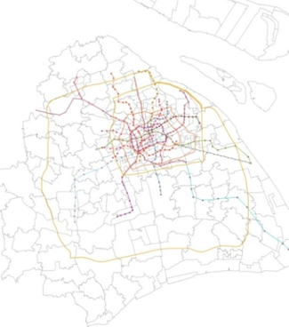
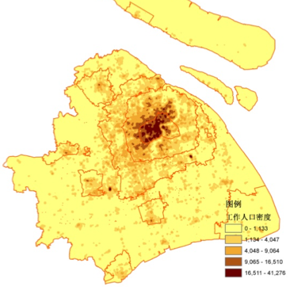
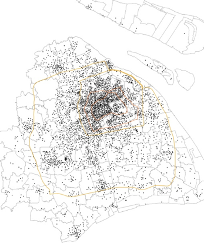
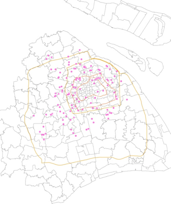
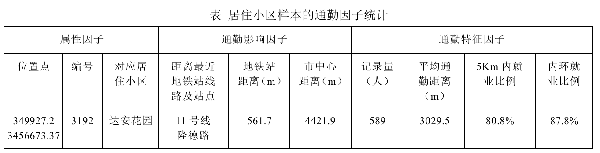
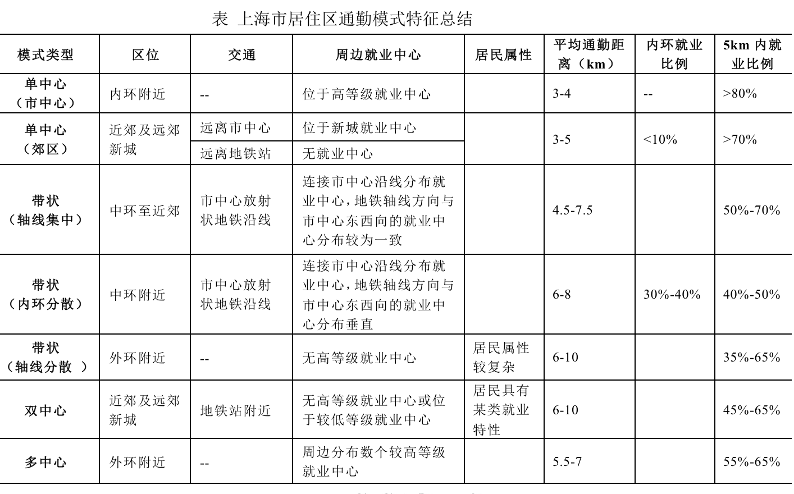
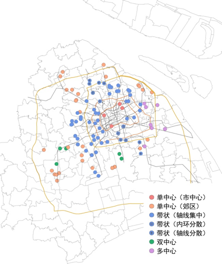
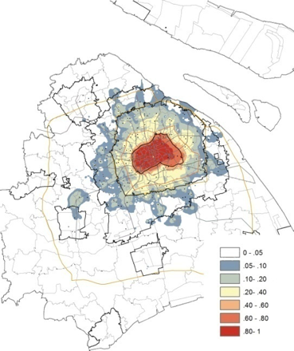
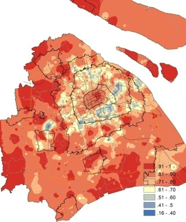
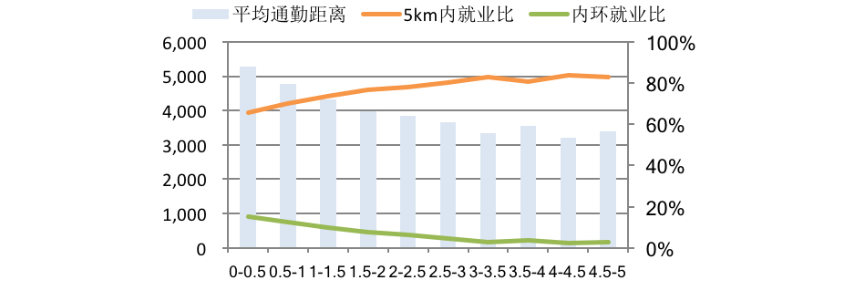

近年来，上海市人口总量迅速增加，中心城区人口高度集中，带来了高房价、交通拥堵等一系列问题。为了疏解中心城区人口，增大住房供应，上海城市建设重心向郊区转移，有序引导中心城人口和产业向外围疏散。以中心城外围（外环之外）“大型社区”为载体，结合新城开发，推进保障性住房建设，安置和集聚对象以中低收入群体为主，缓解中心城区就业与居住压力。与此同时，中心城外围分布着大量高收入群体集聚的别墅区。
上海市中心城区至外围居住区在居住对象属性差异明显的同时，就业环境与交通环境各异，影响通勤的空间组织与分布模式。在各要素综合影响下，不同居住区通勤空间的分布模式特征，反映了住房政策、产业空间调整与交通设施建设对通勤行为的影响。
现有的居住区通勤行为研究多基于传统的出行问卷调查，从居住社区角度进行案例分析。随着大数据的兴起，手机数据被广泛用于居民行为与城市空间研究。手机数据具有空间高覆盖率、高持有率的特征，可较好反应居民时空行为规律。而我们利用手机数据，以居住小区为基础，研究上海市人口郊区化背景下，中心城区至远郊新城范围内职住关系演变，对通勤空间分布模式进行现状评估与特征分析，并讨论相应住房、产业及交通发展政策的合理制定。
本研究选取上海市居住小区为研究对象，空间上自中心城区至远郊新城分布，中心城区外围居住小区属性尤为复杂，包括保障性住房、高档别墅区等。通勤的空间分布与就业中心分布及交通状况紧密相关，上海市地铁网络呈现市中心向外放射状，连接郊区新城，中心城区地铁线路密集，郊区相对稀疏，通勤人口大部分集中于地铁沿线；通过手机信令数据识别的就业人口核密度间接反映了较高等级就业中心概况，上海市就业核心位于中心城区内，内环就业尤为集聚，呈现东西向分布趋势，除此之外，存在外高桥、张江高科等就业中心与新城就业中心。
 研究主要采取的是2014年上半年某两周上海2G移动用户的手机信令数据。研究数据中，上海市共分布几万个基站，基站间的距离在几百米至几千米不等，中心城区基站较为密集。每当手机与基站进行通讯连接时，基站会进行记录并产生一条信令数据，数据为匿名形式，每条信令数据包含用户ID、时间戳、基站位置编号、事件类型（如接打电话、接发短信、位置更新）等信息。手机数据具有空间高覆盖率、高持有率、的特征，可以较好的反应居民时空行为规律。
每条手机信令数据记录了用户联系基站的编号，在进行位置识别时，以基站位置代表用户实际位置进行估算。研究中，首先针对每一个用户，选择1天内0-6点的所有记录点中，与其他记录点的距离和最小的点作为识别出的当天的居住地，再对识别出10个工作日的用户居住地重复距离和最小的方法选出其稳定居住地，对于多天识别出的居住地之间差异过大的用户，认为其没有稳定居住地；同时，利用9-17点的记录和同样的流程识别出用户的稳定工作地；以稳定居住地与工作地的直线距离为通勤距离。通过以上方法，上海市范围内共识别同时具有稳定居住地与工作地的用户约752.0万，居住地与工作地重合的用户视为没有通勤出行，不在本研究的考虑范围，筛选出通勤距离大于0的通勤用户382.1万。
基于处理的通勤数据，首先筛选出居住记录量大于300的位置点，全市范围约4000个。对居住记录量大于500，且位于相对均质居住小区内部的位置点进行采样，每个位置点的记录代表居住小区样本，在全市空间范围内较均匀的采样121个居住小区进行分析。
 基于居住小区，统计部分通勤影响因子：地铁站点距离，市中心距离（以人民广场市中心进行计算）；及通勤特征因子：平均通勤距离（直线距离），5km内就业比例，内环就业比例。同时，结合居住小区对应样本的就业地分布核密度图与通勤距离频次分布图进行就业空间分布模式的判断。
上海市居住小区通勤空间分布的典型模式包含单中心、带状、双中心、多中心四类。单中心模式主要分布在市中心内环附近及近郊区、远郊新城。内环附近就业中心等级高且密度大， 近郊区部分地区和远郊新城到市中心可达性低或周边就业岗位充足，居民以就近就业为主。带状模式主要分布在中环至近郊区，主要包括地铁轴线集中，周边轴线集中、内环分散，地铁轴线分散几种模式。双中心模式主要分布在近郊区和远郊新城，市中心距离15-30km。居住地距离市中心较远，通往市中心地铁交通便利，具有拆迁安置或经济适用房属性，且居民对市中心通勤依赖度高。多中心模式主要分布在外环附近。市中心距离约10-20km，居住地邻近多个较高等级就业中心，同时市中心地铁沿线就业中心存在一定吸引力。
就平均通勤距离而言，由高到低依次是单中心、多中心、带状、双中心。其中，双中心和带状模式中轴线分散形式的5km内就业比例最低、平均通勤距离最高。外环附近的多中心模式一定程度上增加了5km内就业比，减少了平均通勤距离。
 市中心具有强大的吸引力，定义内环内就业比5%为市中心吸引临界值，外围居住区就业人员的吸引边界基本位于近郊、距离市中心25km左右，飞地式覆盖部分远郊新城（如松江新城）；而远郊新城的就业吸引基本位于新城范围内，远距离的影响较小。
 地铁站对通勤的影响基本上在3km以内，地铁站点的可达性提高增加了居住小区通勤对长距离的忍耐度，越临近地铁站，内环就业比增加，5km内就业比减少，平均通勤距离增加。
居住地周边多个较高等级就业中心分布是产生多中心模式的主要原因，这种距离市中心一定距离的就业中心与市中心就业核心产生双重作用，就业地分布呈现通往市中心沿线多中心与居住地周边多中心叠加效果。
住房特性的变化会在特定地区产生模式变化，这种变化主要发生在外环及近郊。
结合5km内就业比、内环内就业比、平均通勤距离等参数，将上海市居住区通勤模式划分为单中心、带状、双中心、多中心和非典型五种，分别占27.3%，47.9%，4.1%，5.8%和14.9%。平均通勤距离，由高到低依次是单中心、多中心、带状和双中心模式。其中，双中心和带状（轴线分散）模式的5km内就业比例最低、平均通勤距离最高。
不考虑其他因子，居住区就业地空间分布模式由中心向外围呈现单中心——带状——单中心的演变。市中心的吸引边界在近郊25km左右，吸引边界外围基本为单中心模式；地铁站对通勤的影响边界在3km左右，距地铁站3km内易产生带状模式，3km外带状模式显著减少；住地周边多个较高等级就业中心分布是产生多中心模式的主要原因，与市中心就业核心形成双重影响；居住区其他特征（是否是高档社区，是否是外来人口聚居社区和是否是郊区安置社区等）的区别主要集中在外环及近郊，产生带状（轴线分散）、双中心等模式变化。